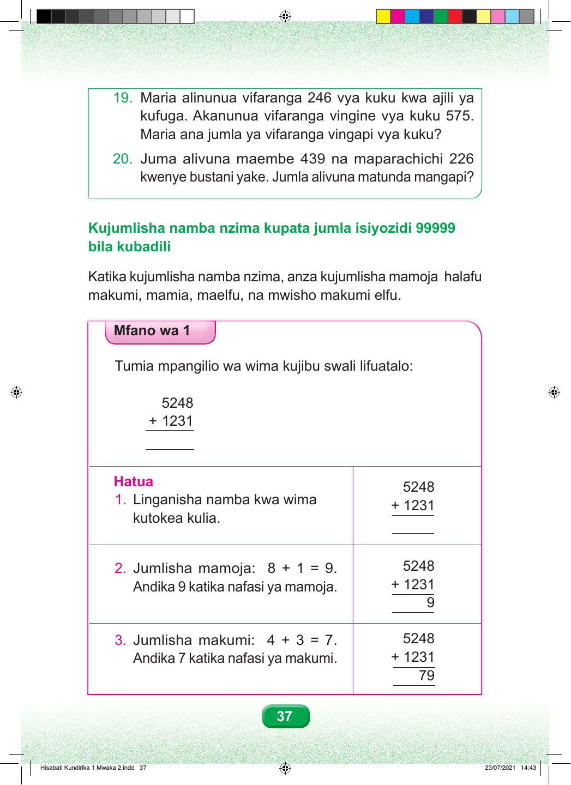

19. Maria alinunua vifaranga 246 vya kuku kwa ajili ya kufuga. Akanunua vifaranga vingine vya kuku 575. Maria ana jumla ya vifaranga vingapi vya kuku? 20. Juma alivuna maembe 439 na maparachichi 226 kwenye bustani yake. Jumla alivuna matunda mangapi? Kujumlisha namba nzima kupata jumla isiyozidi 99999 bila kubadili Katika kujumlisha namba nzima, anza kujumlisha mamoja halafu makumi, mamia, maelfu, na mwisho makumi elfu. Mfano wa 1 Tumia mpangilio wa wima kujibu swali lifuatalo: 5248 + 1231 Hatua 5248 1. Linganisha namba kwa wima + 1231 kutokea kulia. 2. Jumlisha mamoja: 8 + 1 = 9. 5248 Andika 9 katika nafasi ya mamoja. + 1231 9 3. Jumlisha makumi: 4 + 3 = 7. 5248 Andika 7 katika nafasi ya makumi. + 1231 79 37 Hisabati Kundirika 1 Mwaka 2.indd 37 23/07/2021 14:43